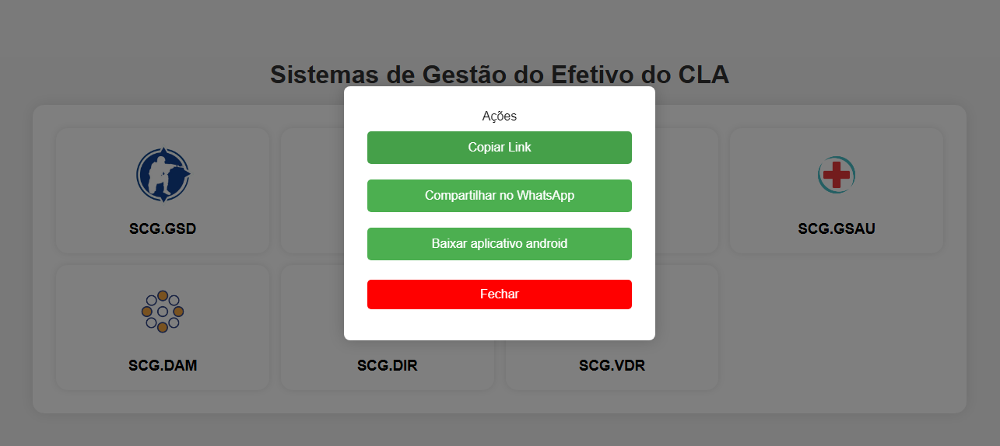
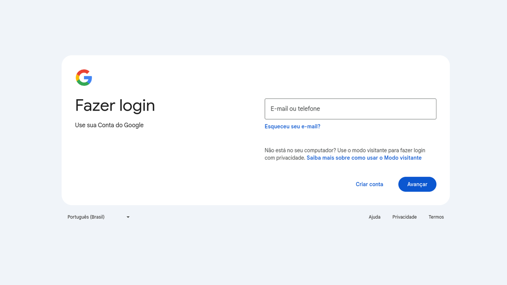
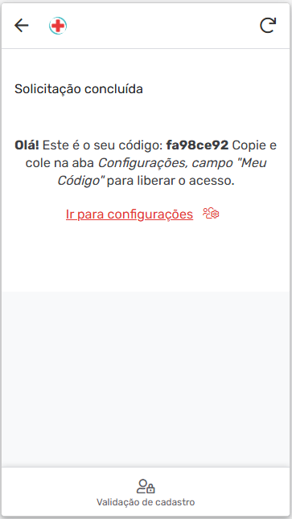

Visão Geral
Este conjunto de sistemas foi desenvolvido para gerenciar as divisões do CLA. Cada uma das 7 divisões possui seu próprio aplicativo, criado pela appsculpt, permitindo uma administração independente e personalizada.
Principais Funcionalidades
- Gerenciamento de dados pessoais dos militares.
- Controle de faltas com dashboards em tempo real.
- Registro de militares presentes, ausentes e com justificativas.
- Geração de relatórios diários para retirada de faltas.
- Monitoramento de entrada e saída de serviços.
- Análise detalhada para gestão eficiente das divisões.
Divisões
Cada um dos 7 aplicativos é responsável por gerenciar uma das divisões:
- DAI
- DAM
- DIR
- DOP
- GSAU-AK
- GSD-AK
- VDR
Tutoriais
Como acessar
Para acessar o aplicativo, siga os passos abaixo:
- Acesse a página inicial:
Acesse a página de aplicativos pagina inicial.

- Selecione o aplicativo:
Na página inicial, você verá links para baixar o aplicativo ou acessá-lo diretamente pelo navegador. O sistema possui 7 aplicativos, e você deve acessar aquele que corresponde à sua divisão. Clique no aplicativo desejado para começar.
 - Login com a conta da Google do setor:
Ao acessar o aplicativo, você será solicitado a fazer login. Use a conta de e-mail do setor à qual você pertence. Cada divisão tem um e-mail específico do Google. Certifique-se de usar o e-mail correto da sua seção.
 - Validação de Cadastro:
Após o login, você será redirecionado para uma aba chamada "Validação de cadastro". Nessa etapa, você deve validar suas credenciais pessoais (CPF e e-mail pessoal), as quais foram fornecidas ao administrador.

- Confirmação da Validação:
Após inserir as informações corretamente, o sistema validará seus dados. Em seguida, você receberá um token pessoal. Esse código é necessário para acessar completamente o aplicativo.
Copie o código gerado e, em seguida, vá até as Configurações do aplicativo. No campo "Meu Código", cole o token que você copiou para finalizar a configuração do seu acesso.

Após seguir esses passos, você estará dentro do aplicativo e pronto para usar as funcionalidades de sua divisão!
Tutorial da Categoria 2
Conteúdo do tutorial para a Categoria 2...
Tutorial da Categoria 3
Conteúdo do tutorial para a Categoria 3...
Benefícios para a Empresa
- Automatização de processos administrativos.
- Redução de erros no controle de presença e faltas.
- Agilidade na geração de relatórios e análise de dados.
- Transparência na gestão de cada divisão.
Próximos Passos
Os sistemas podem ser expandidos para incluir funcionalidades adicionais, como integração com outras ferramentas corporativas e relatórios avançados com gráficos interativos.